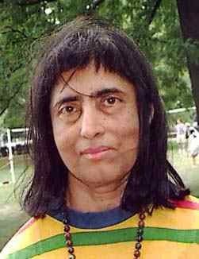

Bhama Srinivasan:
Bhama Srinivasan (born 22 April 1935[1]) is a mathematician known for her work
in the representation theory of finite groups. Her contributions were honored
with the 1990 Noether Lecture. She served as president of the Association for
Women in Mathematics from 1981 to 1983.
Srinivasan earned her Ph.D. in 1959 with her dissertation Problems on Modular
Representations of Finite Groups under J. A. Green at the University of Manchester.
She is Professor Emerita at the University of Illinois at Chicago. She has had five
doctoral students. She has co-authored a number of papers with Paul Fong in modular
representation theory and Deligne–Lusztig theory.
Awards and honors
In 2012 she became a fellow of the American Mathematical Society.[4] In 2017, she was
selected as a fellow of the Association for Women in Mathematics in the inaugural class.
[5] She is included in a deck of playing cards featuring notable women mathematicians
published by the Association of Women in Mathematics.[6]
